So far in this course, you have learned that
onCreate() is the first function that gets created when an application is launched. There are several other functions that get called when an application is launching:
To start a new Activity, use the startActivity() function. This takes an Intent object as a parameter.
Go ahead and implement all of these functions. Checkout your master branch, and from there create a new branch called "Week4". You can then automatically implement the functions that are inherited by the parent class by clicking on "Ctrl+O" (that's the letter O, not the number 0). Android Studio will give you a list of all of the inherited functions. You can start typing onstart and the search bar should find it from the list:
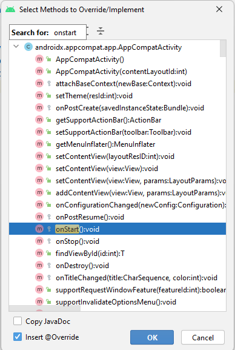
Double-clicking on the function should implement an empty function:
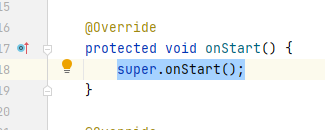
Go ahead and implement the rest of the other functions: onResume(), onPause(), onStop(), onDestroy().
Next, you can practice some of the debugging features in Android Studio. At the bottom, notice that there's a tab called "Logcat". It's a log window of various debug messages.
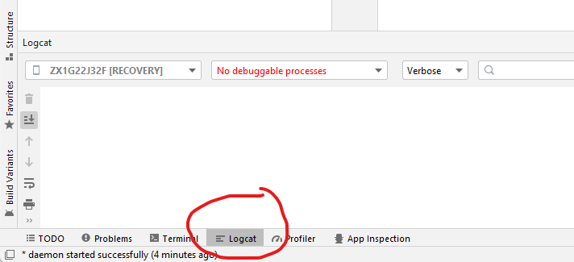
The LOG window:
You can also add some messages in here using the Log class in Android. Go to the onCreate() function and add the line of code:
Log.w( "MainActivity", "In onCreate() - Loading Widgets" );
You will have to import the Log class. Then run your application and look at the Logcat window. Type "MainActivity" in the search field:
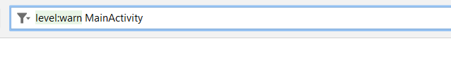
Also add "level:warn" and you will see all Log.w messages. There are different levels of messages:
Log.v ( ) - shows a Verbose message. Using level:verbose will show all levels of messages: (v, d, i, w, e)
Log.d( ) - shows a Debug message. Using level:debug will show (d, i, w, e)
Log.i ( ) - shows an Info message. Using level:info will show (i, w, e)
Log.w ( )- shows a Warn message. Using level:warn will show (w, e)
Log.e ( ) - shows an Error message. Using level:error will show just e level messages.
The first parameter is a String called the TAG. This should be the class name that you're in, and the second parameter is called the message. You can simplify the TAG portion by declaring a String variable:
private static String TAG = "MainActivity";
and then put the variable TAG as the first parameter to the warning messages:
Log.d( TAG, "Message");
Put a Log.w message in all of the 6 life cycle functions (onCreate, onStart, onResume, onPause, onStop, onDestroy) that are in your MainActivity class, and make the messages to be an explanation of what is happening in each function. The descriptions are at the top of this page:
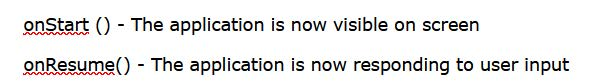
Now debug your application and the program should stop at the first breakpoint that it finds:
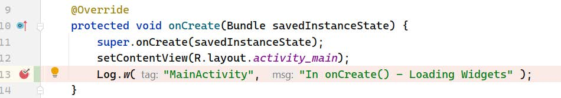
Notice that the line is highlighted in blue, and the debug window shows some information:
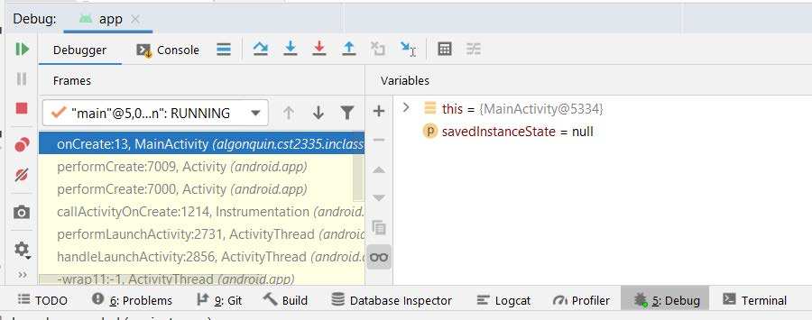
At the top left, the resume button
will resume running the program. Below that is the red square, which stops the program. Below that is the icon with two red circles, which lists all of your breakpoints in your program. Below that is the red circle with a diagonal line through it. This is the "mute" button for breakpoints. Clicking it will not remove the breakpoints, but the debugger will no longer stop at the breakpoints. Beside the buttons is the call stack:
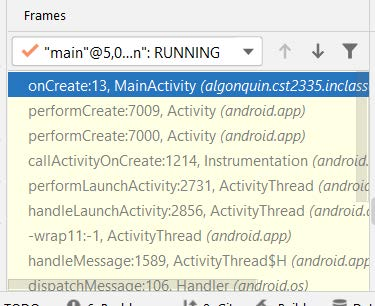
This shows you which function you are stopped in, and which line the program is about to run. If you scroll all the way down the list, you'll see that the program actually does start at a main() function, but it's part of Android, not your application. Beside that is the variables window , which shows you which variables are currently in your program, and what value they hold:
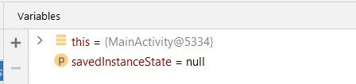
Android Studio also puts the relevant values in your source code on the lines where they are used:
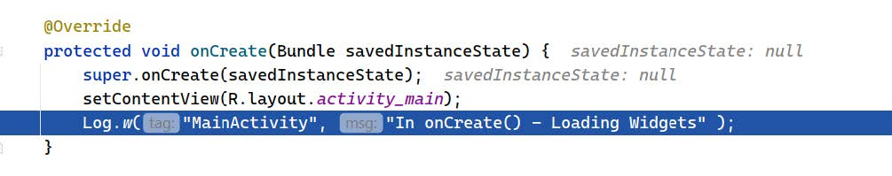
Notice here that savedInstanceState: null is not part of the source code. It's actually the debugger showing you the values without you having to look at the variables window below. Go ahead and click on the crooked arrow button:
This means debug until the next line. The program will stop and again show you the values there. The blue down arrow is the step into button, which will start debugging the first line of the function that you are currently debugging. If you look at the picture above, it would start debugging the Log.w( ) function. The blue upwards arrow means step out, meaning run to the end of the current function, and then stop at the next line after returning from the function. Go ahead and click the Resume button now.
Back to some theory:
Android uses the startActivity() function to launch another page, or Activity. Go to your activity_main.xml layout and design a layout that looks like this: 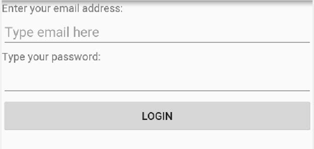 There is a TextView at the top that says "Enter your email address:"
Below is an EditText with the android:hint="Type email here".
Below that is a TextView that says "Type your password:".
Below that is an EditText, with the android:inputType="textPassword". This means that when you type, it replaces the text with "*" so that the password is not visible. This inputType parameter can also control the keyboard that appears when typing. Some common types are: "number", "textEmailAddress", "numberDecimal". Here is a good resource to learn more about EditText and input types:
.
At the bottom is a Button that says "Login".
This interface should look like a typical application where you first have to authenticate yourself before going any further. Create a second page by selecting the "File" menu -> "New" -> "Activity" -> "Empty Activity":
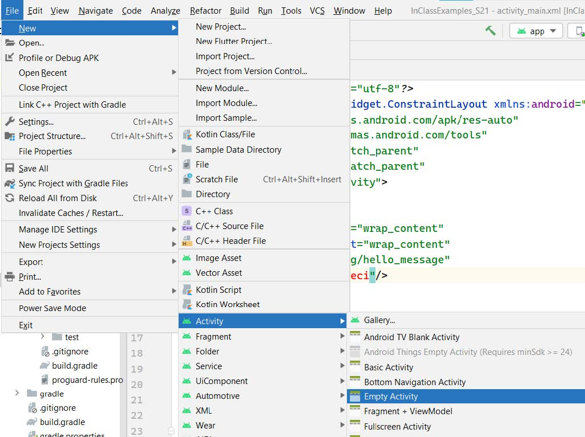
Call this next activity "SecondActivity":
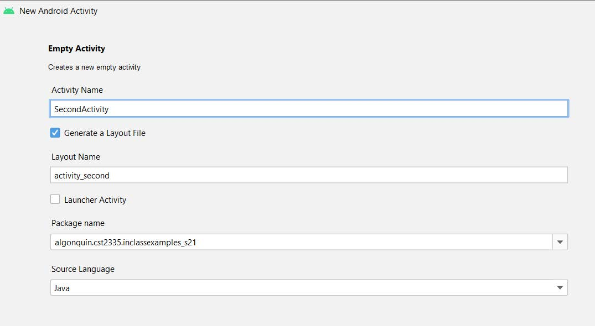
Design your second page layout so that it looks like this:
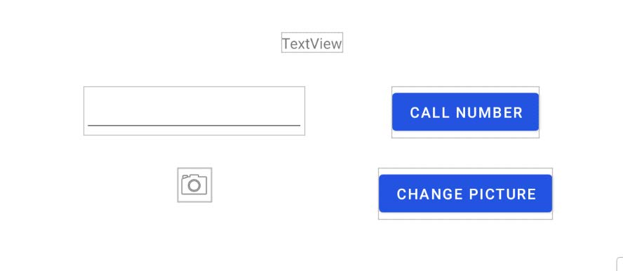
loginButton.setOnClickListener( clk-> { } );
Now let's use the startActivity( ) to go from one page to another. Here is a brief tutorial on how to use startActivity(): https://developer.android.com/training/basics/firstapp/starting-activity. However in our case, we'll build an Intent object that goes to SecondActivity.java:
Intent nextPage = new Intent( MainActivity.this, SecondActivity.class);
This intent says that you want to transition from MainActivity to SecondActivity. Then to actually make the transition, you call startActivity with the intent object:
startActivity( nextPage);
And that's it! Try it now on your app.
Lab step 3: Call startActivity in the onClick handler for the login button and you should see that it transitions to your new page. You can click on the back arrow to go back to the previous Activity:
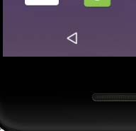
An Intent object also lets you send variables to the next Activity using the putExtra() functions:
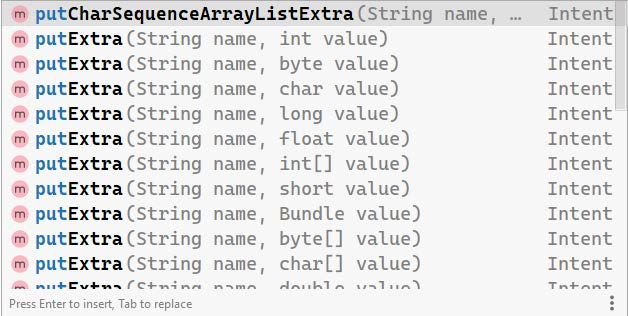
You can attach a variable under a variable name so that the next page can read those variables. Try to add the string that the user has typed in for the email address into the Intent: nextPage.putExtra( "EmailAddress", emailEditText.getText().toString() ); Put a breakpoint on that line and try running your app. Type something in the email address field and see what happens to the Intent object in the debugger:
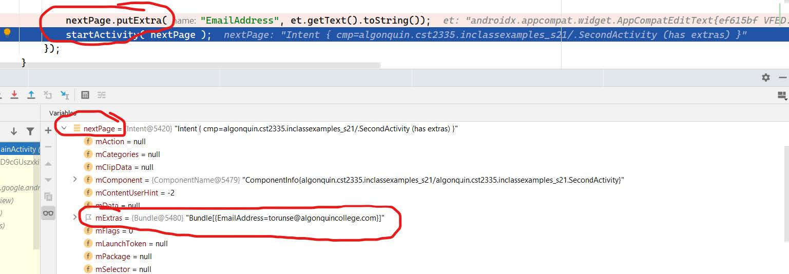
Notice that the Intent object nextPage has a variable called mExtras, and it's storing the data now that EmailAddress=torunse@algonquincollege.com, which is what I typed into my email address before pressing the login button. The startActivity() function will load SecondActivity, and there is a function called getIntent() which will return the Intent object that caused this transition. In the SecondActivity's onCreate() function, write code to retrieve the Intent object that has the variables:
Intent fromPrevious = getIntent();
Put a breakpoint on this line and run your application. Type in an email address and go to the next page which should stop at the breakpoint. Look in the debugger:
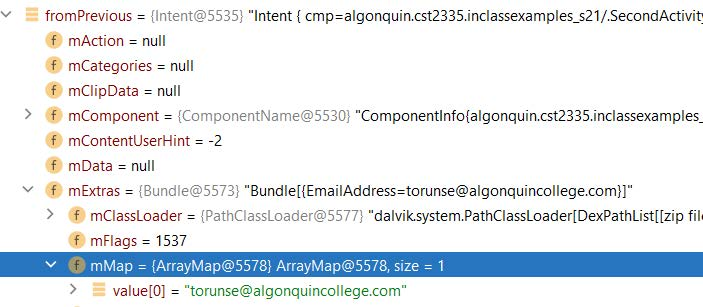
The mExtras variable has the data that was sent from MainActivity. To retrieve this data, you call getExtra(), but you have to modify it to the data type that is stored. In this case, "torunse@algonquincollege.com" is a String so you call getStringExtra("EmailAddress"). EmailAddress is the variable name that your stored it under. So now you can store the data from the previous page:
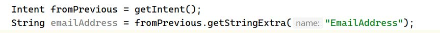
This string should then be put at the top TextView on your page, but modify the TextView to say: "Welcome back " + emailAddress. One of the main points of this week's material is the startActivity( Intent i) function. The Intent class not only specifies the transition from one page to another, but you can also send variables to that next page:
Intent next = new Intent( FirstPage, NextPage);
next.putInt("Age", ...);
next.putString("Name", ...);
next.putString("PostalCode", ...);
Then in the next page, you call:
Intent fromPrevious = getIntent();
int age = fromPrevious.getIntExtra("Age");
String name = fromPrevious.getStringExtra("Name");
String pCode = fromPrevious.getStringExtra("PostalCode");
You can also transition to some of the built-in Activities on the phone. You can make a phone call, send an SMS, take a picture, load Google maps, etc. In this case, you use the predefined Intent constants. For making a phone call, it's:
Intent call = new Intent(Intent.ACTION_DIAL);
However the phone needs to know which number to call. For that, your store the phone number in the Intent :
call.setData(Uri.parse("tel:" + phoneNumber));
Then you call startActivity(). Go ahead now and set a click listener to the "Call Number" button on your SecondActivity.java. When the user clicks the button, get the string from the Phone Number EditText and put that as the phone number to call in the Intent. However, this might cost money to make phone calls, so you have to ask the user's permission. This is done by declaring the <uses-permission> in the AndroidManifest.xml:
<uses-permission android:name="android.permission.CALL_PHONE">
Put this line between the <manifest> tag and the <application> tag:
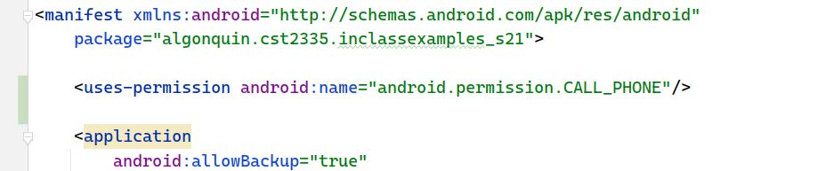
Lastly, write an onClick() handler to change the profile picture. To take a picture with the phone, the Intent to use is:
Intent cameraIntent = new Intent(MediaStore.ACTION_IMAGE_CAPTURE);
However in this case, we want the phone to return an Image from the next Activity . You have learned how to send data from one Activity to the next one, now you will learn how to get data back from the next activity .
The old way of doing this was to use the function: startActivityForResult(), however this has been replaced in Android. The new way is to create an ActivityResultLauncher object:
ActivityResultLauncher <Intent> cameraResult = registerForActivityResult( , );
The first parameter to pass in the function call above is called an ActivityResultContract:
new ActivityResultContracts.StartActivityForResult()
This says that you are registering code for when the next activity finishes and returns a result. The second parameter to pass in is a callback function to receive data from the next activity:
new ActivityResultCallback<ActivityResult>() {
@Override
public void onActivityResult(ActivityResult result) {
if (result.getResultCode() == Activity.RESULT_OK) {
Intent data = result.getData();
}
}
}
Putting these 3 parts together, you should have:
Lastly, launch the cameraIntent:
cameraResult.launch(cameraIntent);
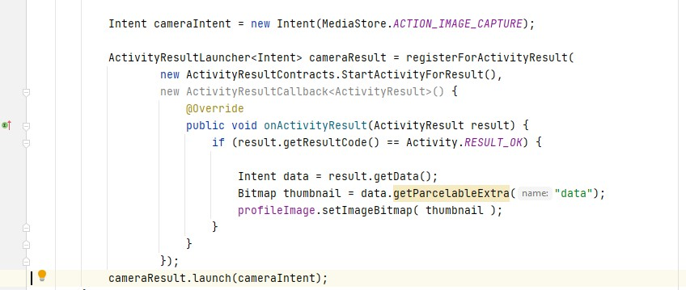
Taking a picture on your phone also needs to declare a <uses-permission> in the AndroidManifest.xml. Add this line below the other line:
<uses-feature android:name="android.hardware.camera" android:required="true">.
This just says that your application requires a camera so don't install it on devices that don't have a camera.
On line 39 in the picture above, the result of another activity can either RESULT_OK, or RESULT_CANCELED. If the result is RESULT_OK, then the camera activity sends back a Bitmap in the Intent data object. Android stores the image under the variable name "data", and it's saved as a Bitmap object:
Bitmap thumbnail = data.getParcelableExtra("data");
Add this code to your "RESULT_OK" case, and then take the returned Bitmap object and set that to be the src parameter of the ImageView:
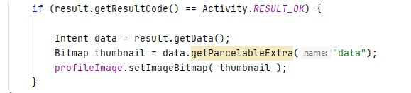
Now run your application and you should be able to login with an email address (Don't worry about checking the password), then the email address shows at the top of the next page with a welcome message. There should then be a phone number editText, which you can press the "Call number" button to actually make a phone call. Lastly , there should be an ImageView, and a "Change picture" button that lets you update the profile picture.
If you don't have an actual phone, then you can use your laptop's webcam as the camera for your Android phone emulator . Click on the AVD manager button in AndroidStudio. From the virtual devices list, click on the pencil icon to edit your virtual device:
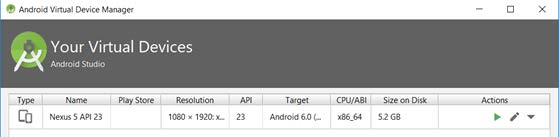
Then click on "Show Advanced Settings":
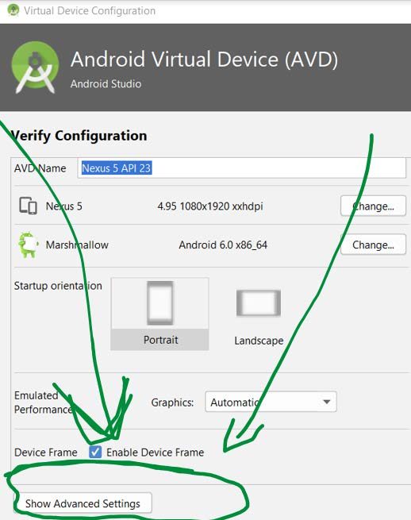
Find the Camera setting. Set both the Front and Back camera to "Webcam0":
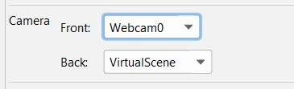
Now when you use the Image Capture activity on your emulator, you should be able to take a real picture. This depends on your computer and the webcam device drivers. If you run into problems and you can't use it, just set the camera to "VirtualScene" and it will take a fake photo of a virtual room. You could also use an Android phone or tablet to take your pictures. This terminates the module on startingActivites. Go on to the next topic to learn how to save the data to the disk (or SD Card). If you want to learn more about the common intents on Android, you can read this guide: https://developer.android.com/guide/components/intents-common. You can set alarms on the phone, read the Calendar, etc.